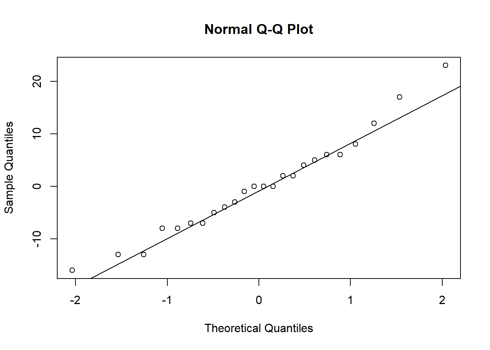

Chapter 6 One Way ANOVA
6.1 The Gauss-Markov Model for comparing I populations
As we saw in the second chapter, the Gauss-Markov linear model easily extends to comparisons of \(I>2\) populations using either a means or effects parametrization.
In this chapter, we discuss how to compare \(I\) populations efficiently, follow-up tests when not all populations are the same, and how to check model assumptions.
The model we will use throughout is \[Y = X\beta + \epsilon\] where \(Y\) is the vector of sampled responses for each of \(I\) groups/populations, \(X\) encodes the group membership structure of the responses, \(\beta\) is an \(I\times 1\) vector that encodes the population means \(\mu_i,\, i=1, \ldots, I\) (not necessarily by the identity function), and \(\epsilon\) is a vector of iid Gaussian random residuals with homogeneous variance \(\sigma^2\).
6.1.1 Example: Donuts effects model
Throughout this chapter we will consider the donuts data: there are 24 observations of oil absorption (in grams above 150 grams) for 4 types of oil (6 replicates per oil, balanced).
Download donuts.csvdonuts <- read.csv('donuts.csv')
head(donuts)## Oil y
## 1 1 14
## 2 1 22
## 3 1 18
## 4 1 27
## 5 1 6
## 6 1 45donuts$Oil <- factor(donuts$Oil, levels = unique(donuts$Oil))The default R parametrization is an effects model where \(\beta_1\) is the Oil level 1 mean response, and \(\beta_2\) through \(\beta_4\) are differences from baseline, i.e., \(\beta_2 = \mu_{2} - \mu_1\).
my.lm<-lm(y~Oil, data = donuts)
model.matrix(my.lm)## (Intercept) Oil2 Oil3 Oil4
## 1 1 0 0 0
## 2 1 0 0 0
## 3 1 0 0 0
## 4 1 0 0 0
## 5 1 0 0 0
## 6 1 0 0 0
## 7 1 1 0 0
## 8 1 1 0 0
## 9 1 1 0 0
## 10 1 1 0 0
## 11 1 1 0 0
## 12 1 1 0 0
## 13 1 0 1 0
## 14 1 0 1 0
## 15 1 0 1 0
## 16 1 0 1 0
## 17 1 0 1 0
## 18 1 0 1 0
## 19 1 0 0 1
## 20 1 0 0 1
## 21 1 0 0 1
## 22 1 0 0 1
## 23 1 0 0 1
## 24 1 0 0 1
## attr(,"assign")
## [1] 0 1 1 1
## attr(,"contrasts")
## attr(,"contrasts")$Oil
## [1] "contr.treatment"6.2 Testing equality of means
The ANOVA null hypothesis is equalit of all population means \(H_0:\mu_1 = \mu_2 = \cdots = \mu_I\) versus \(H_a:\text{not all means are equal}\). Given the other assumptions (normality and homogeneous variance) the null hypothesis implies equality of all I populations.
Somewhat counterintuitively, the key to efficiently testing equality of means lies in comparing two different estimators of the common variance \(\sigma^2\). Consider the pooled variance estimator:
\[MSE = \frac{1}{N-I}\sum_{i=1}^I\sum_{j=1}^{n_i}(Y_{ij} - \bar Y_{i\cdot})^2\]
where the subscript \(i\) denotes the group membership and the subscript \(j\) denotes the individual within group \(i\); \(N = \sum_{i=1}^I n_i\) where \(n_i\) is the \(i^{th}\) group’s sample size. Clearly, the mean squared error (MSE, also called mean within group variability or MSW) is a pooled variance estimator, equal to the pooled sample variance \(S_p^2\) when \(I=2\). It is straightforward to show \(MSE\) is unbiased for \(\sigma^2\), given that the sample variance in each group is unbiased for the variance. Furthermore, since \(\sum_{j=1}^{n_i}(Y_{ij} - \bar Y_{i\cdot})^2\) divided by \(\sigma^2\) follows a Chi-squared distribution with \(n_i - 1\) degrees of freedom, and since sums of independent Chi-squared r.v.’s are Chi-squared with df equal to the sum of degrees of freedom of the summand r.v.’s it follows that
\[\frac{MSE}{\sigma^2}\sim \chi^2(N-I).\]
Similarly, suppose the null hypothesis above is true and all the means are the same. Then, \(\bar Y_{i\cdot}\stackrel{ind}{\sim}N(\mu, \sigma^2/n_i)\), and another unbiased estimator of \(\sigma^2\) is given by \[MSTr = \sum_{i=1}^I n_i(\bar Y_{i\cdot}-\bar Y_{\cdot\cdot})^2,\] which is the mean square of treatments (or mean between group variation MSB). However, this is clearly only unbiased under \(H_0\), because under \(H_a\) the observed residuals inside the sum of squares are not centered. Indeed, under the alternative hypothesis, it is not hard (but is tedious) to show that \[E(MSTr) = \sigma^2 + \frac{1}{I-1}\sum_{i=1}^I n_i(\mu_i - \bar\mu)^2\] where \(\bar\mu = N^{-1}\sum_{i=1}^In_i\mu_i\). The bias term is positive, which suggests a one-sided test of \(H_0\) determined by the ratio \(MSTr/MSE\). All we need is the sampling distribution of that statistic. For essentially the same reason as above, it follows that \(MSTr\) follows a Chi-squared distribution with df \(I-1\) under \(H_0\). It’s less obvious that MSTr and MSE are independent, but they are. Very briefly, the reason is that both of these statistics are quadratic forms that may be written \(MSE = Y^\top AY\) and \(MSTr = Y^\top BY\) for some matrices \(A\) and \(B\). Multivariate normal distribution theory says that quadratic forms are independent if \(A\) and \(B\) are orthogonal matrices. Some careful work will show MSE and MSTr satisfy this property. Then, their ratio is a ratio of independent Chi-squared r.v.’s, which is an F r.v.: \[F=\frac{MSTr}{MSE}\stackrel{H_0}{\sim}F(I-1, N-I).\] Recall that only large values of this ratio suggest the null hypothesis is incorrect, and, therefore, we reject \(H_0\) at level \(\alpha\) if \(F>F_{1-\alpha, I-1, N-I}\). This is called the analysis of variance (ANOVA) F test.
<<<<<<< HEAD ### Example: Donuts
Below we evaluate the F test for equality of mean oil absorption across all four types of oil. ``By hand” we find a p-value of 0.0069, which suggests we should reject the null hypothesis of equal means and conclude different oils have different average absorption. Alternatively, the built-in \({\tt aov}\) function will compute the F statistic and p-value, and display both using the \({\tt summary}\) utility function.
library(tidyverse)## ── Attaching packages ─────────────────────────────────────── tidyverse 1.3.2 ──
## ✔ ggplot2 3.3.6 ✔ purrr 0.3.4
## ✔ tibble 3.1.8 ✔ dplyr 1.0.10
## ✔ tidyr 1.2.1 ✔ stringr 1.4.1
## ✔ readr 2.1.2 ✔ forcats 0.5.2
## ── Conflicts ────────────────────────────────────────── tidyverse_conflicts() ──
## ✖ dplyr::filter() masks stats::filter()
## ✖ dplyr::lag() masks stats::lag()by_oil <- group_by(donuts, Oil)
means <- summarise(by_oil, means = mean(y))
SSE <- sum((donuts$y[donuts$Oil==1] - means$means[1])^2) + sum((donuts$y[donuts$Oil==2] - means$means[2])^2)+sum((donuts$y[donuts$Oil==3] - means$means[3])^2)+sum((donuts$y[donuts$Oil==4] - means$means[4])^2)
SSTr <- 6*((means$means[1] - mean(donuts$y))^2)+6*((means$means[2] - mean(donuts$y))^2)+6*((means$means[3] - mean(donuts$y))^2)+6*((means$means[4] - mean(donuts$y))^2)
F <- (SSTr/3)/(SSE/(6*4-4))
SSE## [1] 2018SSTr## [1] 1636.5F## [1] 5.406343p.value <- 1-pf(F, 4-1, 6*4 - 4)
p.value## [1] 0.006875948my.aov <- aov(y~Oil, data=donuts)
summary(my.aov)## Df Sum Sq Mean Sq F value Pr(>F)
## Oil 3 1636 545.5 5.406 0.00688 **
## Residuals 20 2018 100.9
## ---
## Signif. codes: 0 '***' 0.001 '**' 0.01 '*' 0.05 '.' 0.1 ' ' 16.3 Follow-up testing
When we reject the null hypothesis of equal means we usually want to know the answer to the follow-up question “which means are actually different”? It may be that one population mean is different from the others, which are all the same; or, it could be that every mean is different. If this question affects the actions the experimenters would take or recommend, then a follow-up test to evaluate these possibilities is valuable.
The most straightforward way to conduct such a follow-up test would be to compare all the means pairwise and use a Bonferroni correction to account for the multiple tests. This is not the most powerful testing method. A much better method was developed by Tukey for use specifically with one-way ANOVA.
Tukey’s procedure is based on a sampling distribution he derived called Tukey’s Studentized Range distribution. If \(Z_i\) for \(i=1,\ldots, n\) are iid standard normal random variables and \(W\) is a Chi-Squared random variable with \(\nu\) degrees of freedom independent from the \(Z_i\)’s then the random variable
\[T = \frac{\max_{i\ne j}|Z_i - Z_j|}{\sqrt{W/\nu}}\]
follows Tukey’s distribution with two degrees of freedom parameters, \(n\) and \(\nu\).
First, consider a balanced experiment, meaning we collect a random sample \(Y_{i1, \ldots, Y_{i,n}}\) of size \(n\) from every population, \(i=1, \ldots, I\). We know that \(n(I-1)MSE/\sigma^2\) has a Chi-squared distribution with \(nI-I = n(I-1)\) degrees of freedom, and is independent from \(\overline Y_{i\cdot}\) for \(i=1, \ldots, I\) (essentially by Student’s Theorem). The variance of \(\overline Y_{i\cdot} - \overline Y_{j\cdot}\) is \(\sigma^2(1/n + 1/n)\). Therefore,
\[T = \frac{\max_{i\ne j}\left|\frac{\overline Y_{i\cdot}}{\sigma\sqrt{1/n}} - \frac{\overline Y_{j\cdot}}{{\sigma\sqrt{1/n}}}\right|}{\sqrt{n(I-1)MSE/\sigma^2}} = \frac{\max_{i\ne j}\left|\overline Y_{i\cdot} - \overline Y_{j\cdot}\right|}{\sqrt{MSE/n}}\]
follows Tukey’s distribution with degrees of freedom \(I\) and \(n(I-1)\).
Another way Tukey’s test statistic is often written is \[T = \frac{\max_{i\ne j}\left|\overline Y_{i\cdot} - \overline Y_{j\cdot}\right|}{2^{-1/2}\sqrt{MSE(2/n)}},\] which may be easier to remember because the standard error of \(\overline Y_{i\cdot} - \overline Y_{j\cdot}\) is \(2\sigma^2/n\).
Tukey’s procedure says to do the following:
1. Evaluate the test statistics \(T_{i,j}\) for all \({n\choose 2}\) pairs where
\[T_{i,j} = \frac{\left|\overline Y_{i\cdot} - \overline Y_{j\cdot}\right|}{2^{-1/2}\sqrt{MSE(2/n)}}.\]
2. Conclude \(\mu_i\) and \(\mu_j\) are significantly different at level \(\alpha\) if \(T_{i,j} > q_{1-\alpha, n, n(I-1)}\) where \(q_{\alpha,u,v}\) is the \(\alpha^{th}\) quantile of Tukey’s distribution with \(u\) and \(v\) degrees of freedom.
-OR-
1. Evaluate the \({n\choose 2}\) confidence intervals
\[(\overline Y_{i\cdot} - \overline Y_{j\cdot}\pm 2^{-1/2}q_{1-\alpha, n, n(I-1)}\sqrt{MSE(2/n)}).\]
2. For every interval not including zero, conclude the corresponding means are significantly different.
Both procedures, the testing procedure and the confidence interval procedure, maintain Type 1 error at level \(\alpha\) collectively over all \({n \choose 2}\) pairwise comparisons.
When the experiment is unbalanced—meaning that the sample sizes of the samples taken from each of the \(I\) populations are not all equal, Tukey’s procedure is approximate. In that case, Tukey’s statistic \[T_{i,j} = \frac{\left|\overline Y_{i\cdot} - \overline Y_{j\cdot}\right|}{2^{-1/2}\sqrt{MSE\left(\frac{1}{n_i}+\frac{1}{n_j}\right)}}\] only approximately follows Tukey’s studentized range distribution with degrees of freedom \(I\) and \(N-I\) where \(N = \sum_{i=1}^I n_i\). Tukey’s procedure for unbalanced experiments is exactly the same, but the family-wise (over all comparisons) Type 1 error is only approximately controlled at level \(\alpha\).
6.3.1 Donuts example
Tukey’s simultaneous pairwise comparisons may be performed in R using either the built-in TukeyHSD function or the emmeans and contrast functions in the emmeans package. The former performs the confidence interval procedure whereas the latter performs the test statistic procedure, but either way you will obtain the same results.
At level \(5\%\) only oils 2 and 4 had significantly different mean absorption. Note that the 4-2 CI does not contain zero, or, alternatively, that Oil2 - Oil4 p-value if 0.0039, the only one smaller than 0.05.
TukeyHSD(my.aov)## Tukey multiple comparisons of means
## 95% family-wise confidence level
##
## Fit: aov(formula = y ~ Oil, data = donuts)
##
## $Oil
## diff lwr upr p adj
## 2-1 13 -3.232221 29.232221 0.1461929
## 3-1 4 -12.232221 20.232221 0.8998057
## 4-1 -10 -26.232221 6.232221 0.3378150
## 3-2 -9 -25.232221 7.232221 0.4270717
## 4-2 -23 -39.232221 -6.767779 0.0039064
## 4-3 -14 -30.232221 2.232221 0.1065573library(emmeans)
fit.emm <- emmeans(my.aov, "Oil")
summary(contrast(fit.emm, method = "pairwise"))## contrast estimate SE df t.ratio p.value
## Oil1 - Oil2 -13 5.8 20 -2.242 0.1462
## Oil1 - Oil3 -4 5.8 20 -0.690 0.8998
## Oil1 - Oil4 10 5.8 20 1.724 0.3378
## Oil2 - Oil3 9 5.8 20 1.552 0.4271
## Oil2 - Oil4 23 5.8 20 3.966 0.0039
## Oil3 - Oil4 14 5.8 20 2.414 0.1066
##
## P value adjustment: tukey method for comparing a family of 4 estimates6.4 Inference for particular contrasts
Besides pairwise comparisons, experimenters may be interested in comparing particular combinations of treatment means. For example, they may want to answer the question: “Is Oil 4 significantly different than Oils 1-3 combined?” in the contest of the donuts experiment. This is not a pairwise comparison; rather, it’s a linear combination (or contrast) defined by \(\mu_4 - \tfrac13(\mu_1+\mu_2+\mu_3)\). It is important that we decide which contrasts to test apriori—that is, before we do the experiment. We do not want to bias our test procedures by using the data to suggest which contrasts might be significant and then testing those in particular. That practice leads to inflated Type 1 error. Likewise, when testing multiple contrasts, it is a good idea to make a Type 1 correction for multiple tests if a decision or action hinges on the outcome of the tests in total. For this correction we need something new, because Tukey’s procedure only works for pairwise comparisons, and contrasts are more general objects.
In general, a contrast may be written \(\gamma = \sum_{i=1}^I c_i\mu_i = c^\top \mu\) where \(0=\sum_{i=1}^I c_i\). The estimated contrast is \(\hat\gamma = \sum_{i=1}^n c_i\overline Y_{i\cdot}\) and it has standard error \(\sqrt{\sigma^2\sum_{i=1}^n (c_i^2/n_i)}\). It follows that tests and CIs for \(\gamma\) are based on the follow Student’s t r.v.: \[\frac{\hat\gamma - \gamma}{\sqrt{\sigma^2\sum_{i=1}^n (c_i^2/n_i)}}\sim t_{N-I}.\]
Scheff'e developed a correction for simultaneous inference on several (even all possible) contrasts. This method is prefereable to Bonferroni for more than a few contrasts, but will be overly conservative for just two or three contrasts. Scheff'e says to use cutoffs of the form \(\sqrt{(I-1)F_{1-\alpha, I-1, N-I}}\) rather than Student’s t quantiles \(t_{1-\alpha/2, N-I}\) for tests of contrasts and for margin of error expressions for CIs of contrasts. In particular, Scheff'e’s CIs for contrasts \(\gamma_\ell\), \(\ell=1,\ldots\) are \[\left(\hat\gamma_\ell \pm \sqrt{(I-1)F_{1-\alpha, I-1, N-I}}\sqrt{MSE\sum_{i=1}^n (c_i^2/n_i)}\right).\] This collection of CIs has coverage \(100(1-\alpha)\%\) for any vector of contrasts \(\gamma = (\gamma_1, \gamma_2, \ldots )\).
6.4.1 Donuts Example
Below we compute CIs for the contrast comparing Oil 4 to the average of Oils 1-3 and p-values for the test of \(\gamma = 0\) using both the single contrast methods based on the Student’s t sampling distribution and Scheffe’s correction for inference on all simultaneous contrasts. Using the emmeans package we can do these computations with built-in functions rather than “by hand”. Note that the p-value using Scheff'e’s method is about ten times higher than the single contrast method, which demonstrates the correction for inference on all contrasts is substantial.
MSE <- SSE/(6*4-4)
c1 <- c(-1/3, -1/3, -1/3, 1)
gamma.hat <- sum(c1*means$means)
se <- sqrt(MSE*sum((c1^2)*(1/6)))
c(gamma.hat - qt(0.975,4*6-4)*se,gamma.hat + qt(0.975,4*6-4)*se)## [1] -25.54414 -5.789192*pt(gamma.hat/se, 4*6-4)## [1] 0.003506899c(gamma.hat - sqrt((4-1)*qf(0.95,4-1,4*6-4))*se,gamma.hat + sqrt((4-1)*qf(0.95,4-1,4*6-4))*se)## [1] -30.103372 -1.2299621-pf((gamma.hat/(se*sqrt(4-1)))^2, 4-1,4*6-4)## [1] 0.03014771library(emmeans) # may need to install.packages('emmeans')
fit.emm <- emmeans(my.aov, "Oil")
# unadjusted, just testing one contrast
summary(contrast(fit.emm, method = list(c(-1/3, -1/3, -1/3, 1))))## contrast estimate SE
## c(-0.333333333333333, -0.333333333333333, -0.333333333333333, -15.7 4.74
## df t.ratio p.value
## 20 -3.309 0.0035# Scheffe adjustment so that we could test all linear contrasts
summary(contrast(fit.emm, method = list(c(-1/3, -1/3, -1/3, 1)),
adjust = "scheffe"), scheffe.rank = 3)## contrast estimate SE
## c(-0.333333333333333, -0.333333333333333, -0.333333333333333, -15.7 4.74
## df t.ratio p.value
## 20 -3.309 0.0301
##
## P value adjustment: scheffe method with rank 36.5 Checking Assumptions in one-way ANOVA
The ANOVA F test requires the residuals are normally distributed with homogeneous (equal/same) variance. The F test also requires independence, but we will not consider checking that assumption.
To check for equal variances we may apply Levene’s test, which is essentially a generalization of the two-sample F test for equality of two normal population variances. To apply Levene’s test we compute the residuals \(e_{ij} = Y_{ij} - \overline Y_{i\cdot}\) and perform the ANOVA F test on the absolute residuals \(|e_{ij}|\). The null and alternative hypotheses of Levene’s test (ANOVA F test on residuals) are \(H_0:\sigma_i^2 = \sigma^2, \, \text{for all }i=1, \ldots, I\) versus \(H_a:\) at least one population variance is different than the other \(I-1\) variances.
We may check for normality visually using qq-plots of (studentized) residuals. If the assumption is true, we expect almost all the points to fall between \((-2,2)\) and close to the diagonal. There are formal tests for normality (Kolmogorov-Smirnov, Anderson-Darling, etc.) but these are not very powerful.
If qq-plots suggest the normality assumption may not be satisfied, then we can apply a non-parametric test to evaluate equality of the several population distributions. Just the like rank-sum test for comparing two populations, a procedure based on ranks can be used to compare \(I\) populations. Let \(r_{ij}\) be the ranks of the \(y_{ij}\) and let \(\bar r_{i\cdot}\) and \(\bar r_{\cdot\cdot}\) be the averages of ranks in each population sample and overall, respectively. Then, the Kruskal-Wallis test statistic is the ratio of the SSB (or called SSTr) to SST of the ranks, multiplied by \(N-1\):
\[\chi^2 = (N-1) \cdot \frac{\sum_{i=1}^I n_{i}(\bar r_{i\cdot} - \bar r_{\cdot\cdot})^2}{\sum_{i=1}^I\sum_{j=1}^{n_i}(r_{ij} - \bar r_{\cdot\cdot})^2}.\]
The null hypothesis of the Kruskall-Wallis test is that the \(I\) populations are really all the same population (the \(I\) distributions are equal). In the special case in which we assume all populations are normal with the same mean, this null hypothesis is equivalent to the assertion all the means are equal. Under the Kruskal-Wallis null hypothesis, the test statistic \(\chi^2\) is approximately distributed as a Chi-squared r.v. with \(I-1\) degrees of freedom.
6.5.1 Example: Cehcking assumptions for donuts experiment
We can use the residuals computed by the aov function when we performed the ANOVA F test on the responses to perform Levene’s test (the ANOVA F test on the residuals). alternatively, we can use the built-in functions for Bartlett’s test or Levene’s test in the car package. Bartlett’s test is similar to Levene’s test, but is said to be more sensitive to non-normality of responses. Sometimes Leven’s test is performed with sample medians replacing sample means, and is referred to as the Brown-Forsythe test. That test is even less sensitive to departures from the normality assumption.
For the donuts data we do not reject the hypothesis of equal variances—our assumption seems reasonable.
donuts$residuals <- abs(my.aov$residuals)
my.aov.resid <- aov(residuals~Oil, data = donuts)
summary(my.aov.resid)## Df Sum Sq Mean Sq F value Pr(>F)
## Oil 3 41.8 13.94 0.361 0.782
## Residuals 20 772.0 38.60In R you can perform the Brow-Forsythe test using the leveneTest function in teh car package with option center = “median”; by default, the function performs Levene’s test.
library(car)## Loading required package: carData##
## Attaching package: 'car'## The following object is masked from 'package:dplyr':
##
## recode## The following object is masked from 'package:purrr':
##
## somebartlett.test(y ~ Oil, data = donuts)##
## Bartlett test of homogeneity of variances
##
## data: y by Oil
## Bartlett's K-squared = 1.7504, df = 3, p-value = 0.6258leveneTest(y ~ Oil, data = donuts)## Levene's Test for Homogeneity of Variance (center = median)
## Df F value Pr(>F)
## group 3 0.3434 0.7942
## 20Below we perform the Kruskal-Wallis test “by hand” and using its built-in function. For the donuts data, there is no reason to do this, however, because the qq-plot suggests normality is reasonable.
qqnorm(my.aov$residuals)
qqline(my.aov$residuals)
rij <- rank(donuts$y)
r1 <- mean(rij[donuts$Oil == 1])
r2 <- mean(rij[donuts$Oil== 2])
r3 <- mean(rij[donuts$Oil == 3])
r4 <- mean(rij[donuts$Oil == 4])
# SSE
SSE <- sum((rij[donuts$Oil == 1] - r1)^2)+sum((rij[donuts$Oil == 2] - r2)^2)+sum((rij[donuts$Oil == 3] - r3)^2)+sum((rij[donuts$Oil == 4] - r4)^2)
SSE## [1] 557.4167SST <- sum((rij - mean(rij))^2)
SST## [1] 1148# SSTr
SSTr <- SST-SSE
SSTr## [1] 590.5833test.stat <- (6*4 - 1)*(SSTr / SST)
test.stat## [1] 11.832241-pchisq(test.stat, 4-1)## [1] 0.007980479kruskal.test(y ~ Oil, data = donuts)##
## Kruskal-Wallis rank sum test
##
## data: y by Oil
## Kruskal-Wallis chi-squared = 11.832, df = 3, p-value = 0.00798